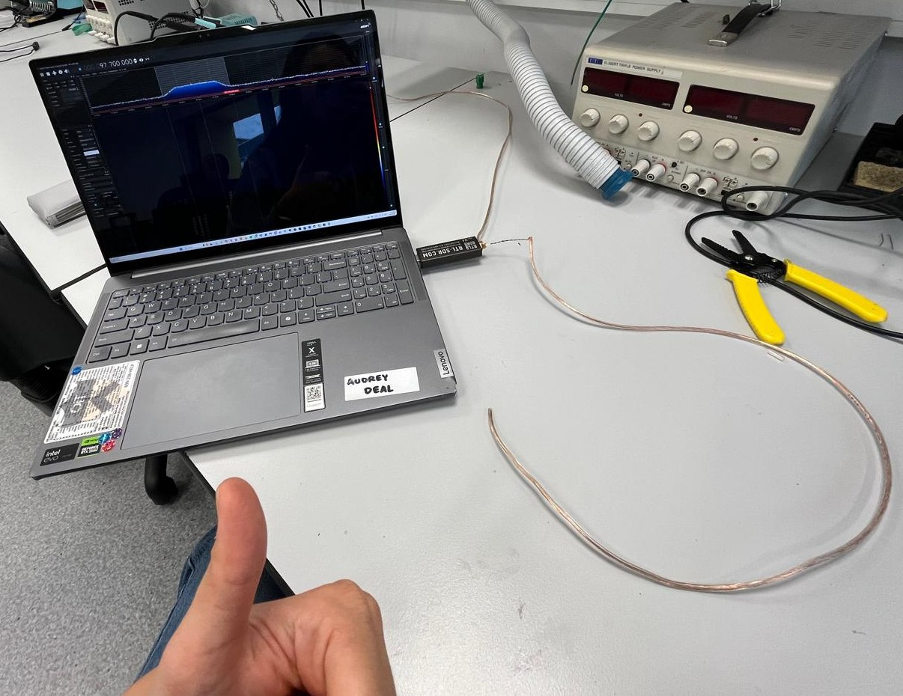
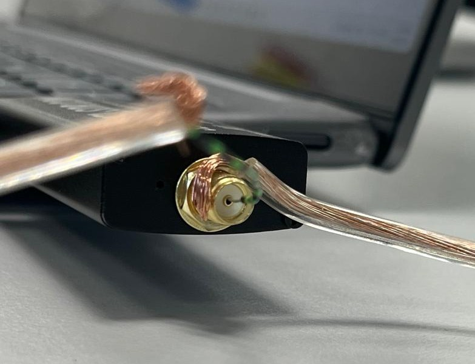

audrey's rtl-sdr fun
(study abroad adventures)
Day 1
I got my dongle today! I set up SDR# (the software to go with the dongle) and played around with it a bit --
realized that it's essentially a very nice software spectrum analyzer!
Tried to get some signals only to find out that the dongle antenna is weak as shiiii.
I didn't want to spend another $20-30 bucks and wait another week to get one, so I decided to see what I could DIY with what I could scavenge
for free around campus.
 
After googling dipole vs monopole vs loop antennas for a good 30 min, I grabbed some speaker wire from the electronics storeroom, cut two pieces
down to dipole antenna length for a 100MHz signal (0.25 * [3e8/100e6]) and stripped the ends of each. One wire got poked into the centre hole on the dongle
SMA connector with some solidcore wire to help, and I wrapped the other around the SMA connector outer shield.
With this setup, I was able to pick up some local radio stations in the 95-105 MHz range! very exciting B-).
I also discovered I don't need the ground connection (the wire wrapped around the SMA outer shield). Maybe because radio FM signals are so strong?